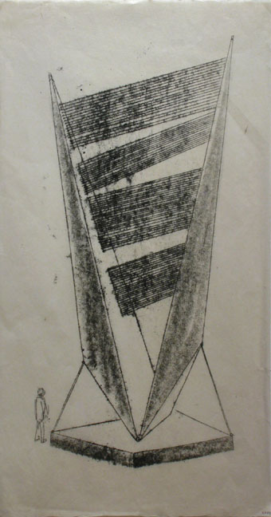
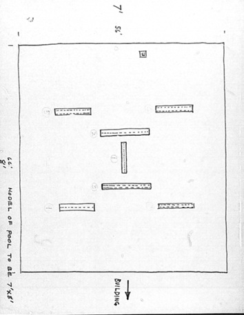
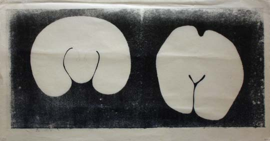

There are many monotypes that relate directly, or sometimes indirectly, to the sounding sculptures. From 1960 onward, sound was on Harry Bertoia’s mind. Let’s demonstrate some of the relationships of monotypes to sculptures.
First, Harry had a series of monotypes all about Aeolian harps. This concept was first conceived by the Greeks in honor of their god, Aeolus, the god of the winds. These instruments were intended to be placed in a breezy spot and played by the natural power of the wind. He never constructed an actual Aeolian harp the way the Greeks thought of them, but made his own versions in the Sonambient sculpures. Here is a sample of his studies.

You can see, the instrument as Harry envisioned it was of huge proportions, and only to be played by the wind and not a human. There are at least 20 of these Aeolian harp monotypes in Harry’s oeuvre.
Perhaps the closest Harry came to achieving a similar project was one of his last monumental commissions. It was an array of eleven sounding sculptures for the Standard Oil building in Chicago in 1975. The array has dwindled to 6 of the smaller pieces and still stands at the now Aon Center. The original drawings showed the grouping as he intended, all of which would have direct access to the strong breezes coming across the Great Lakes, especially Lake Michigan right next to Chicago. This sketch lines out the placement.

There were other monotypes that showed Harry’s ideas for gongs. Circles, ovals, odd shapes, slits, no slits, single ply, double walled and on and on. Here is one sample.

TO BE CONTINUED…